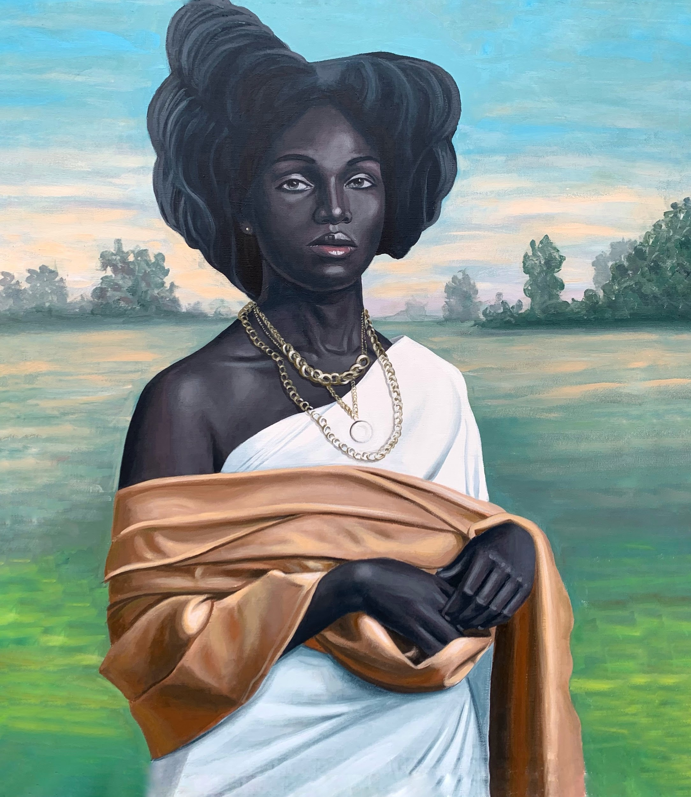

Ibadan, Nigeria
Portraits of
becoming.
A contemporary practice in acrylic, oil and the language of twigs - tracing identity, tenderness and the inherited beauty of Black life.

Golden Raiment, 2024
Acrylic and oil on canvas
Acrylic and oil on canvas